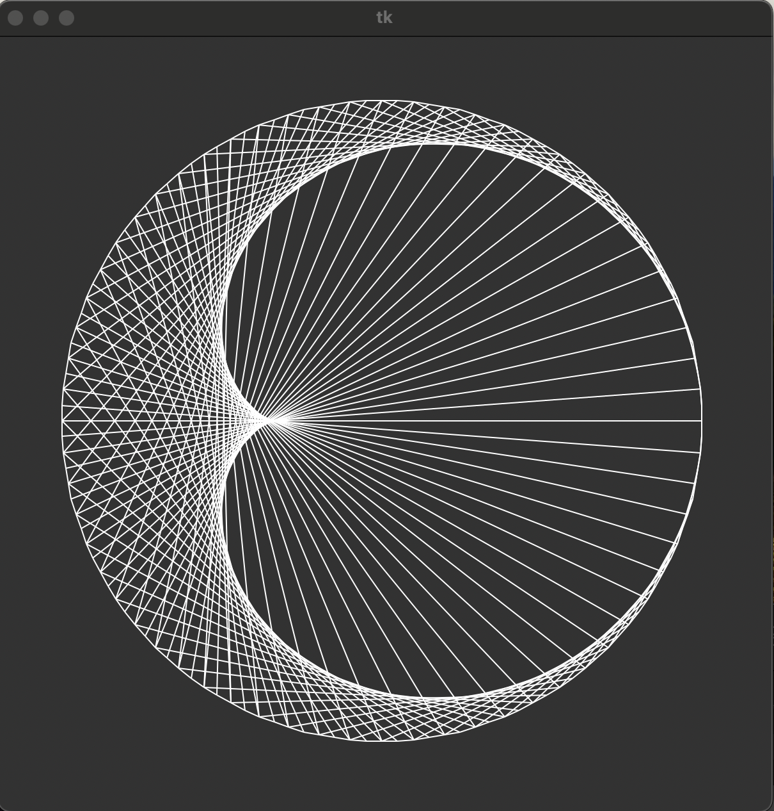
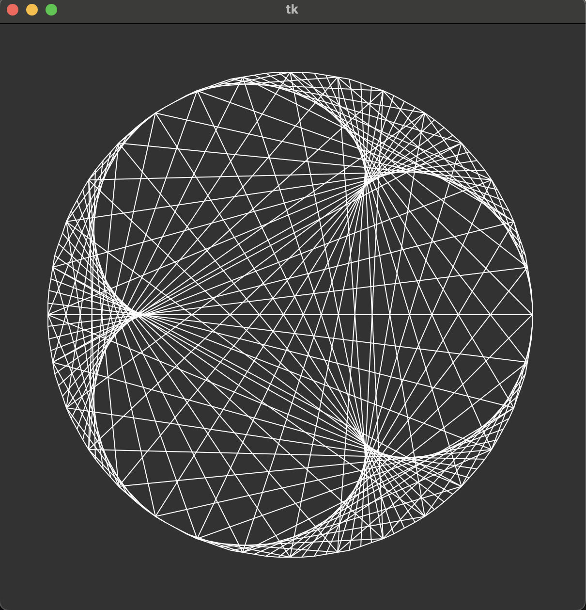
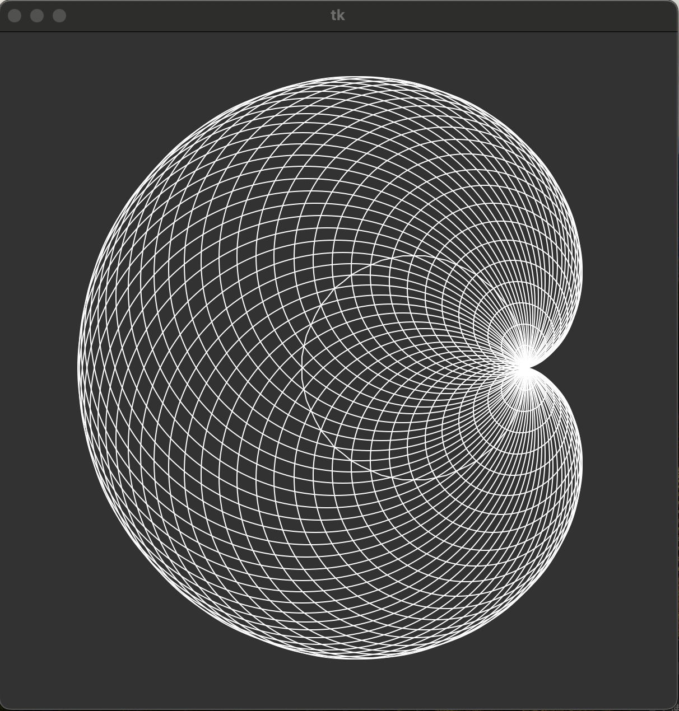
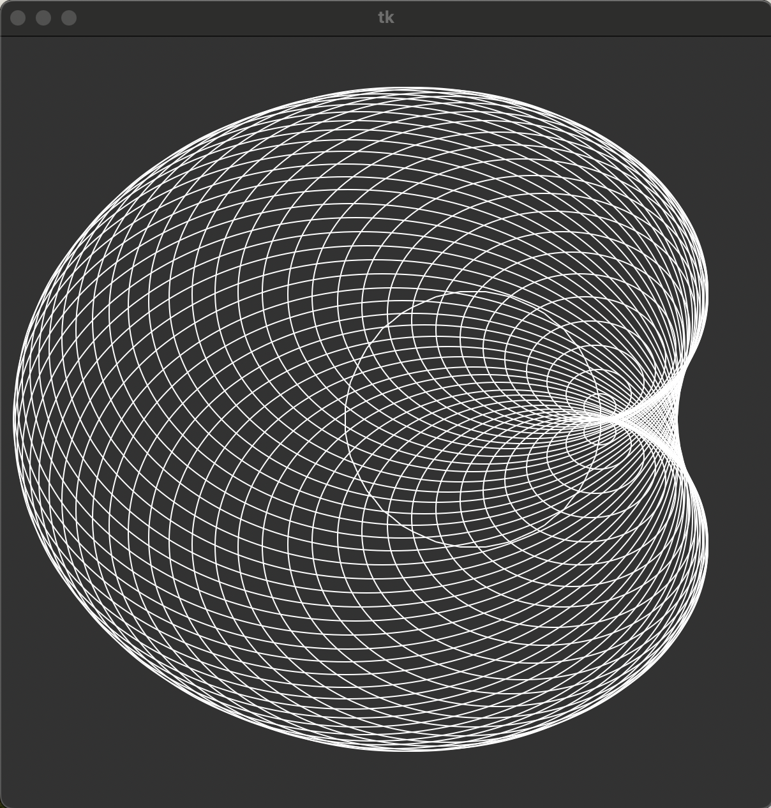
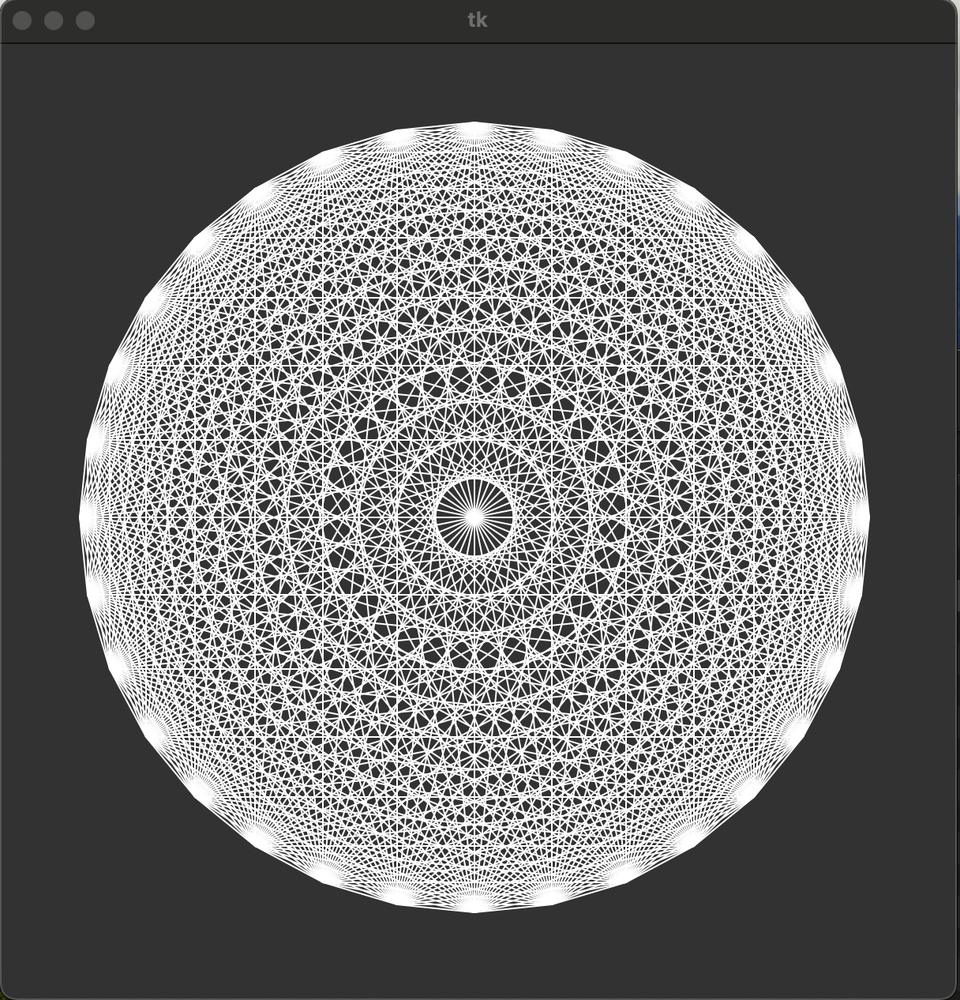
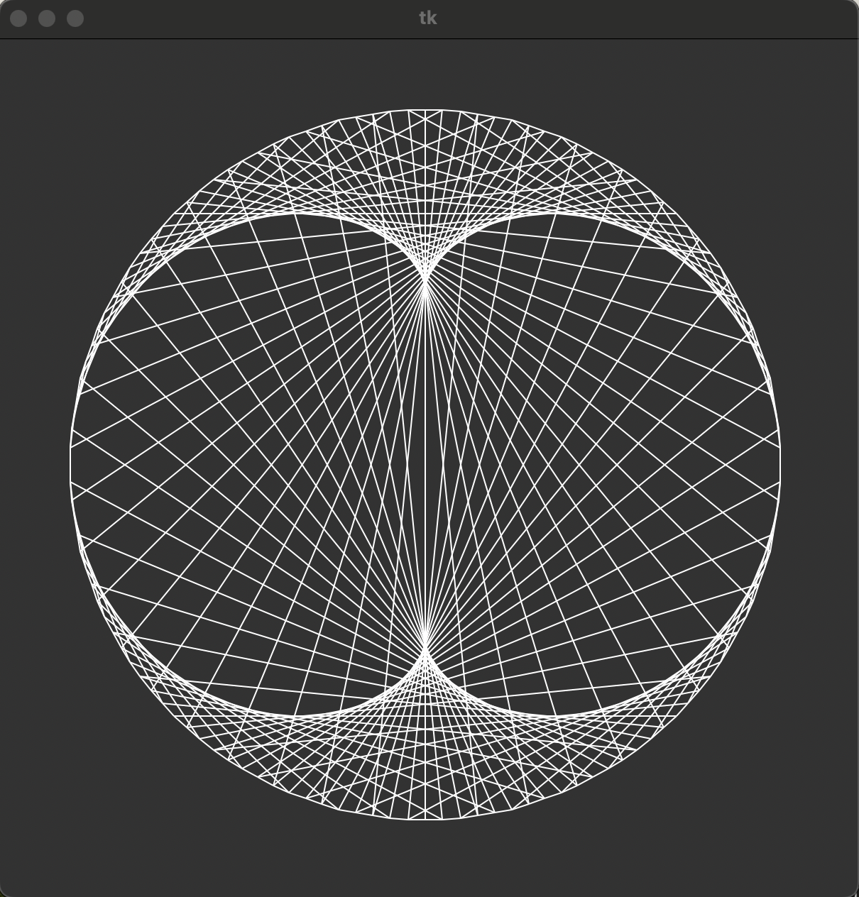
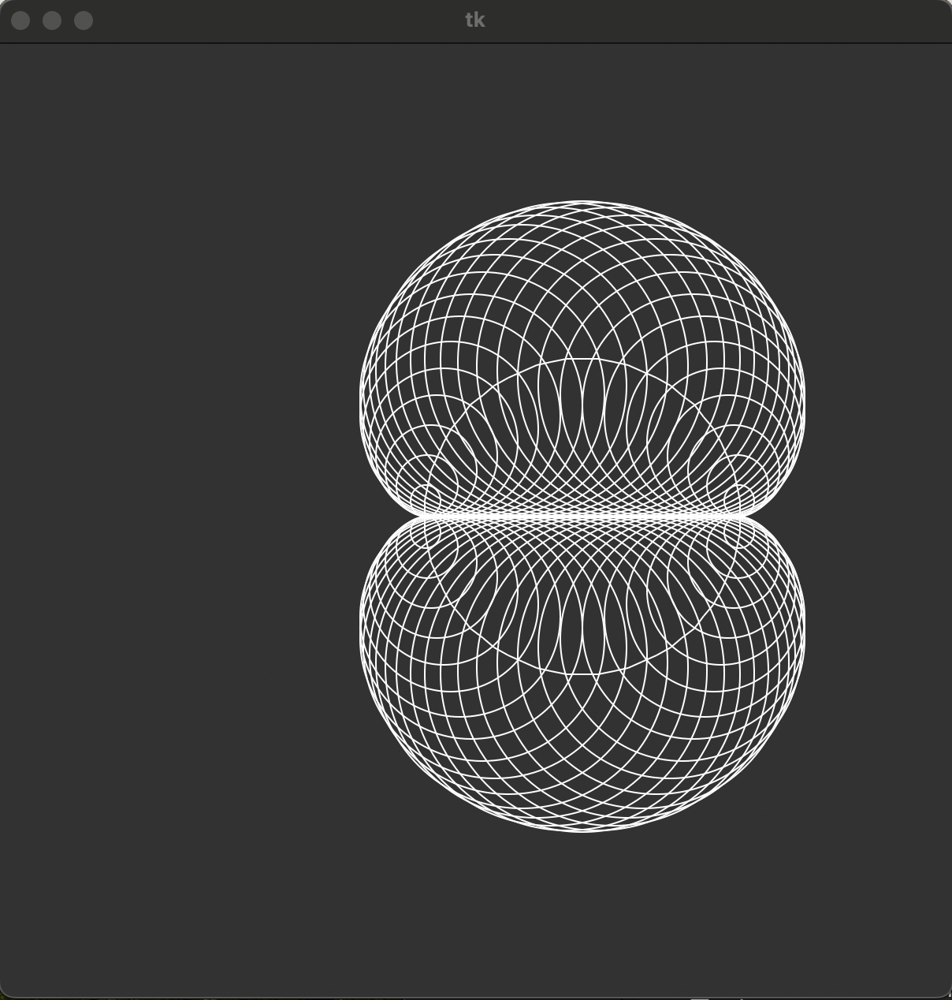

1 from tkinter import *
2 import random
3
4 W, H = (600, 600)
5
6
7 def display(canvas):
8 origin = (W/2, H/2)
9 max_distance = 300
10 for _ in range(11):
11 end = (random.randint(0, W-1), random.randint(0, H-1))
12 distance = ((end[0]-origin[0])**2 + (end[1]-origin[1])**2)**0.5
13 color = 'red' if distance > max_distance else 'black'
14 canvas.create_line(origin, end, fill=color)
15
16
17 def main():
18 root = Tk()
19 canvas = Canvas(root, width=W, height=H, highlightthickness=0)
20 canvas.pack()
21 display(canvas)
22 root.mainloop()
23
24 if __name__ == '__main__':
25 main()
1 from tkinter import * # tkinterモジュールのimport
2
3 W, H = (600, 600) # canvasの幅と高さ
4
5 def display(canvas): # 描画関数
6 '''
7 canvas - 描画するcanvas
8 11本の放射上の線分を1ピクセルごとに描画する
9 '''
10 points = ((W/60, H-1), (W/20, H-1), (W/8, H-1), (W/4, H-1),
11 ( W/2, H-1), ( W-1, H-1), (W-1, H/2), (W-1, H/4),
12 ( W-1, H/8), ( W-1, H/20), (W-1, H/60)) # 線分の終点，11個
13 origin = (0, 0) # 線分の始点 (左上隅)
14 for i in range(len(points)): # 線分描画の反復 (終点の個数分)
15 if points[i][0] >= points[i][1]: # x >= y (横長の直線)
16 n = int(points[i][0]) # 表示ピクセルの個数(-1): n = x
17 d = points[i][1] / points[i][0] # 1ピクセルごとの差分
18 for x in range(n+1): # ピクセル(1x1長方形)描画の反復 (n+1)回
19 y = int(x*d+0.5) # y座標値
20 p, q = ((x, y), (x+1, y+1)) # 長方形の左上隅と右下隅
21 canvas.create_rectangle(p, q, outline='', fill='black')
22 # 1ピクセル(1x1長方形)の描画
23 else: # x < y (縦長の直線)
24 n = int(points[i][1]) # 表示ピクセルの個数(-1): n = y
25 d = points[i][0] / points[i][1] # 1ピクセルごとの差分
26 for y in range(n+1): # ピクセル(1x1長方形)描画の反復 (n+1)回
27 x = int(y*d+0.5) # x座標値
28 p, q = ((x, y), (x+1, y+1)) # 長方形の左上隅と右下隅
29 canvas.create_rectangle(p, q, outline='', fill='black')
30 # 1ピクセル(1x1長方形)の描画
31 def main(): # main関数
32 root = Tk() # ルートフレームの作成
33 canvas = Canvas(root, width = W, height = H, highlightthickness=0)
34 # canvasの作成
35 canvas.pack() # canvasの配置確定
36 display(canvas) # 描画関数 (display) の呼出
37 root.mainloop() # ルートフレームの実行ループ開始
38
39 if __name__ == '__main__': # 起動の確認 (コマンドラインからの起動)
40 main() # main関数の呼出
1 from tkinter import *
2 import sys
3 import math
4
5 W, H = (600, 600)
6 R = 250
7
8 def circle(cen=(W / 2, H / 2), r=R):
9 if len(sys.argv) > 1:
10 num = sys.argv[1]
11 else:
12 num = input('# of points -> ')
13
14 n = int(num)
15 p = []
16
17 for i in range(n):
18 t = 2 * math.pi * i / n
19 p.append((r * math.cos(t) + cen[0], r * math.sin(t) + cen[1]))
20
21 return tuple(p)
22
23 def display(canvas, points):
24 total_length = 0
25 for i in range(len(points)):
26 j = (i + 1) % len(points)
27 canvas.create_line(points[i], points[j])
28 total_length += math.dist(points[i], points[j])
29 total_length /= (2 * R)
30 canvas.create_text(W / 2, H / 2, text=str(total_length))
31
32 def main():
33 root = Tk()
34 canvas = Canvas(root, width=W, height=H)
35 canvas.pack()
36 points = circle()
37 display(canvas, points)
38 root.mainloop()
39
40 if __name__ == '__main__':
41 main()%
例題3のプログラムに手を加えて、正多角形を描画するのに加えて円周率の近似値を表示するプログラムを実行した。28 ~ 30行目のように全ての頂点間の距離の和を直径で割ったもの、すなわち円周率の近似値を求める処理を追加した。プログラムを実行した結果、正1024角形とその円周率の近似値が得られた。ほとんど円の様に見えるが円周率の近似値は3.141587725277176で実際の数値と0.0000048ほどの誤差しかないためほぼ正確な円が描画できたことがわかった。
□課題2.0 - 2.2節 例 4: 直線によるカージオイドの描画 cardioidLine.py
○プログラムリスト
1 from tkinter import *
2 import circle
3
4
5 def display(canvas, points):
6
7 for i in range(len(points)):
8 j = (2*i) % len(points)
9 canvas.create_line(points[i], points[j])
10
11
12 def main():
13 root = Tk()
14 canvas = Canvas(root, width=circle.W, height=circle.H)
15 canvas.pack()
16 points = circle.circle()
17 circle.display(canvas, points)
18 display(canvas, points)
19 root.mainloop()
20
21
22 if __name__ == '__main__':
23 main()
○実行コマンド
$ python cardioidLine.py 128
○実行結果
（文字列の表示なし）

○考察
正多角形の頂点Piと頂点P2iを直線で結びカージオイドを描画するプログラムを走らせた。実行をした結果以上の様な横軸に対して線対象なハートが横を向いた形が描画された。これはPiとP2iを結ぶ線分で描く図形のため、iが小さければその線分は短く密集するが、iが一定まで大きくなると線分の長さが長くなり、線分は分散するため起こることだと考える。つまり、PiとP2iではなく、3i,4iと変えていくと、線分が密集する部分と分散する部分のエリアが散在すると考えた。章末問題でP3iの場合は実行するので、次の段落でP4iの場合について考察をする。
□課題2.0 - 2.2節 例 4: 直線によるカージオイドの描画ver2 cardioidLine2.py
○プログラムリスト
1 from tkinter import *
2 import circle
3
4
5 def display(canvas, points):
6
7 for i in range(len(points)):
8 j = (4*i) % len(points)
9 canvas.create_line(points[i], points[j])
10
11
12 def main():
13 root = Tk()
14 canvas = Canvas(root, width=circle.W, height=circle.H)
15 canvas.pack()
16 points = circle.circle()
17 circle.display(canvas, points)
18 display(canvas, points)
19 root.mainloop()
20
21
22 if __name__ == '__main__':
23 main()
○実行コマンド
$ python cardioidLine2.py 128
○実行結果
（文字列の表示なし）

○考察
正多角形の頂点Piと頂点P4iを直線で結びカージオイドを描画するプログラムを走らせた。例題4の実行により、3i,4iを増やしていくと、線分が密集した部分と分散した部分つまり黒と白のエリアの数が増えると推測した。実行結果を見てみると以上の様に、白のエリアが3つあるように見える。P2iの場合は一つ、P3iの場合は二つ、P4iの場合は三つ白いエリアができることがわかった。これは、PiとPniの線分がn-1周、円に沿って少しずつ角度を変えながら回っているからだと考える。小学生の頃に、ギザギザの円の形の定規に鉛筆を刺してぐるぐる回すと何周かすれば元の場所に戻り綺麗な幾何学模様を書いて遊んでいたことを思い出した。今回は円に沿って動かしたが、この形を変化させればさらに興味深い結果が得られそうと感じた。
□課題2.0 - 2.2節 例 5: 円によるカージオイドの描画 cardioidOval.py
○プログラムリスト
1 from tkinter import *
2 import circle
3
4
5 def display(canvas, points):
6
7 for i in range(1, len(points)):
8 r = ((points[i][0] - points[0][0])**2 + (points[i][1] - points[0][1])**2)**0.5
9
10 ul = (points[i][0] - r, points[i][1] - r)
11 lr = (points[i][0] + r, points[i][1] + r)
12 canvas.create_oval(ul, lr)
13
14
15 def main():
16 root = Tk()
17 canvas = Canvas(root, width=circle.W, height=circle.H)
18 canvas.pack()
19 points = circle.circle((circle.W/2+70, circle.H/2), 100)
20 circle.display(canvas, points)
21 display(canvas, points)
22 root.mainloop()
23
24
25 if __name__ == '__main__':
26 main()
○実行コマンド
$ python cardioidOval.py 64
○実行結果
（文字列の表示なし）

○考察
基円上に中心をもち、基円上の定点を通過する円群によってカージオイドを包括するプログラムを走らせた。create_ovalメソッドは楕円を作成するメソッドで、外接長方形として、正方形を指定したため以上の写真の様なカージオイドとなった。このcreate_ovalメソッドの動作について興味が湧いたので、次の段落ではcreate_ovalの引数を変化させたプログラムを実行して、その働きについて理解を深めていこうと思う。
□課題2.0 - 2.2節 例 5: 円によるカージオイドの描画ver2 cardioidOval2.py
○プログラムリスト
1 from tkinter import *
2 import circle
3 import sys
4
5
6 def display(canvas, points):
7
8 if len(sys.argv) > 2:
9 x = float(sys.argv[2])
10 else:
11 x = float(input("> float"))
12
13 for i in range(1, len(points)):
14 r = (((points[i][0] - points[0][0])**2 + (points[i][1] - points[0][1])**2)**0.5)
15
16 # x軸方向にx倍伸びたカージオイドを作成する
17 ul = (points[i][0] - x*r, points[i][1] - r)
18 lr = (points[i][0] + x*r, points[i][1] + r)
19 canvas.create_oval(ul, lr)
20
21
22 def main():
23 root = Tk()
24 canvas = Canvas(root, width=circle.W, height=circle.H)
25 canvas.pack()
26 points = circle.circle((circle.W/2+70, circle.H/2), 100)
27 circle.display(canvas, points)
28 display(canvas, points)
29 root.mainloop()
30
31
32 if __name__ == '__main__':
33 main()
○実行コマンド
$ python cardioidOval2.py 64 1.3
○実行結果
（文字列の表示なし）

○考察
基円上に中心を持ち、基円上の定点を通過した、縦横比率1:xの楕円群によりカージオイドを描画するプログラムを走らせた。例題5のプログラムのcreate_ovalメソッドの働きが気になったため、横軸方向に任意の小数倍した楕円形によってカージオイドを描くことにした。実行結果は以上の通り横軸に1.3倍された楕円形によるカージオイドが期待通り描かれた。特に面白いと思ったのは、写真の右側のハート型の頂点部分だ。楕円群ではハートの頂点がなめらかになっており、立体的に見えて美しいと感じた。
□課題2.0 - 章末問題 : ダイアモンドパターンの描画 diamond.py
○プログラムリスト
1 from tkinter import *
2 import circle
3
4 W, H = (600, 600)
5
6
7 def display(canvas, points):
8 n = len(points)
9
10 # 全ての対角線を描く
11 for i in range(n):
12 for j in range(i+1, n):
13 canvas.create_line(points[i], points[j])
14
15
16 def main():
17 root = Tk()
18 canvas = Canvas(root, width=W, height=H)
19 canvas.pack()
20 points = circle.circle()
21 display(canvas, points)
22 root.mainloop()
23
24
25 if __name__ == '__main__':
26 main()
○実行コマンド
$ python diamond.py 32
○実行結果
(文字列の表示なし)

○考察
円周上に均等に置かれたn点から全ての2点の組を選んで線分を描いてダイアモンドパターンを描画するプログラムを走らせた。章末問題の題意を満たすようにコードを作成し、ダイアモンドパターンは全て線分によってできているので、多角形状の穴がたくさん空いているのが目立った図形を推測していたが、実行結果は以上のとおり、非常に美しく、何層も円が重なり合った図形で驚いた。これは頂点から頂点までの距離が同じ線分がn-1個あり、それらが同じ角度づつ回転してできており、頂点から頂点までの距離も複数通りあるのに加え、頂点の数も多い為いくつもの円がある様に見えるのだと考えた。
□課題2.0 - 章末問題 : ネフロイドの描画（直線による） nephroidLine.py
○プログラムリスト
1 from tkinter import *
2 import circle
3
4
5 def display(canvas, points):
6 for i in range(len(points)):
7 j = (3*i) % len(points)
8 canvas.create_line(points[i], points[j])
9
10
11 def main():
12 root = Tk()
13 canvas = Canvas(root, width=circle.W, height=circle.H)
14 canvas.pack()
15 points = circle.circle()
16 circle.display(canvas, points)
17 display(canvas, points)
18 root.mainloop()
19
20
21 if __name__ == '__main__':
22 main()
○実行コマンド
$ python nephroidLine.py 128
○実行結果
（文字列の表示なし）

○考察
正多角形で頂点Piと頂点P3iを結ぶ対角線による直線群により、ネフロイドを描画するプログラムを走らせた。例題4で頂点Piと頂点P2iの場合の図形を描画し、頂点niのnはどうやら描く図形の白く見える部分の数に影響することを推測した。プログラムを実行した結果、推測通り白い部分が2個で桃の様な図形が得られた。やはり、少しづつ角度を変えて線分を書き続けると周期ができて綺麗な対称性を持つ様になると考える。
□課題2.0 - 章末問題 : ネフロイドの描画（円による） nephroidOval.py
○プログラムリスト
1 from tkinter import *
2 import circle
3
4
5 def display(canvas, points):
6 for i in range(1, len(points)):
7 r = abs(points[i][1] - points[0][1])
8 ul = (points[i][0] - r, points[i][1] - r)
9 lr = (points[i][0] + r, points[i][1] + r)
10 canvas.create_oval(ul, lr)
11
12
13 def main():
14 root = Tk()
15 canvas = Canvas(root, width=circle.W, height=circle.H)
16 canvas.pack()
17 points = circle.circle((circle.W/2+70, circle.H/2), 100)
18 circle.display(canvas, points)
19 display(canvas, points)
20 root.mainloop()
21
22
23 if __name__ == '__main__':
24 main()
○実行コマンド
$ python nephroidOval.py 64
○実行結果
(文字列の表示なし)

○考察
基円上の点を中心として、基円の中心を通る直線に接する円群によってネフロイドを描画するプログラムを走らせた。このプログラムでは円以外に使用しないので、丸みを帯びた図形のみが描画されると推測していたが、出力結果は以上の様に基円の中心を通る直線が見えることに驚きました。これは円と基円の中心を通る直線の接点が円の半径が変化するごとに少しづつx軸方向に変化したからだと考えます。これはdotLines.pyでピクセルで直線が描けたのと同じ原理であり、改めて点の集合体が線なのだと認識できました。
□課題や授業に関して
○レポート作成に要した時間
4時間
○特に苦労した点
例題の数が多かったので、一つ一つどこを変えたら新しい図形が得られるか、新しい学びが得られるかを考えることに時間がかかってしまいました。
○授業についての感想や希望
いつも興味深い図形のプログラムを用意してくださってありがとうございます。これから取り組むかもしれませんが、動的に変化する図形の作り方などを早く知りたいです。そうしたら、考察での理解をより深められると思います。